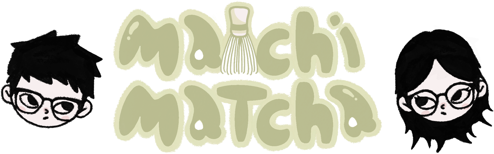
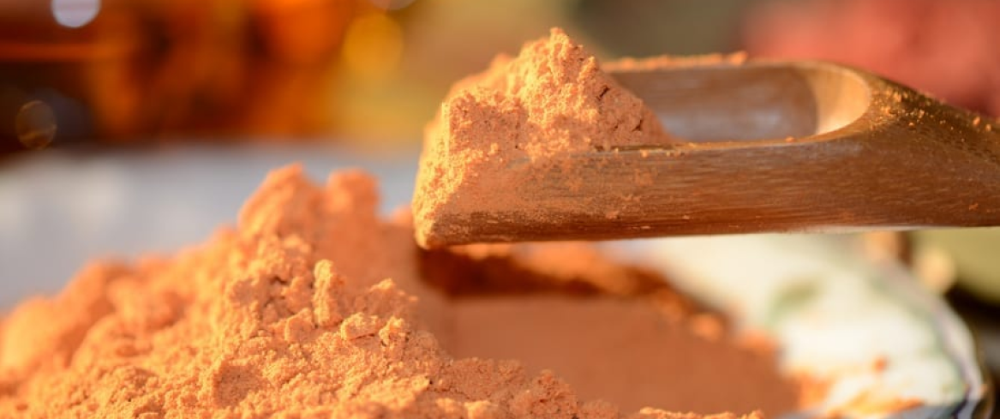
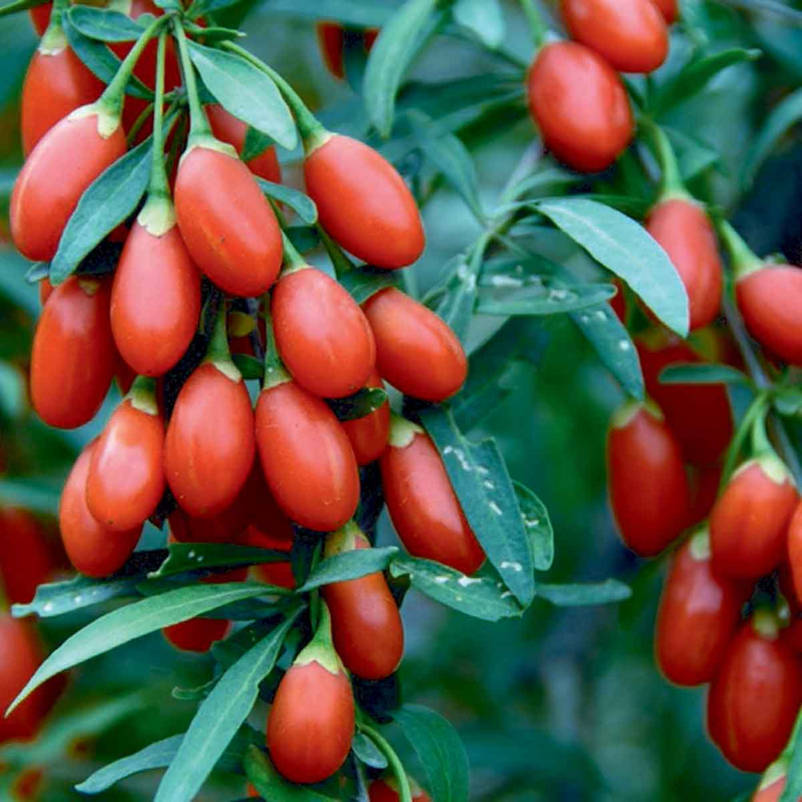
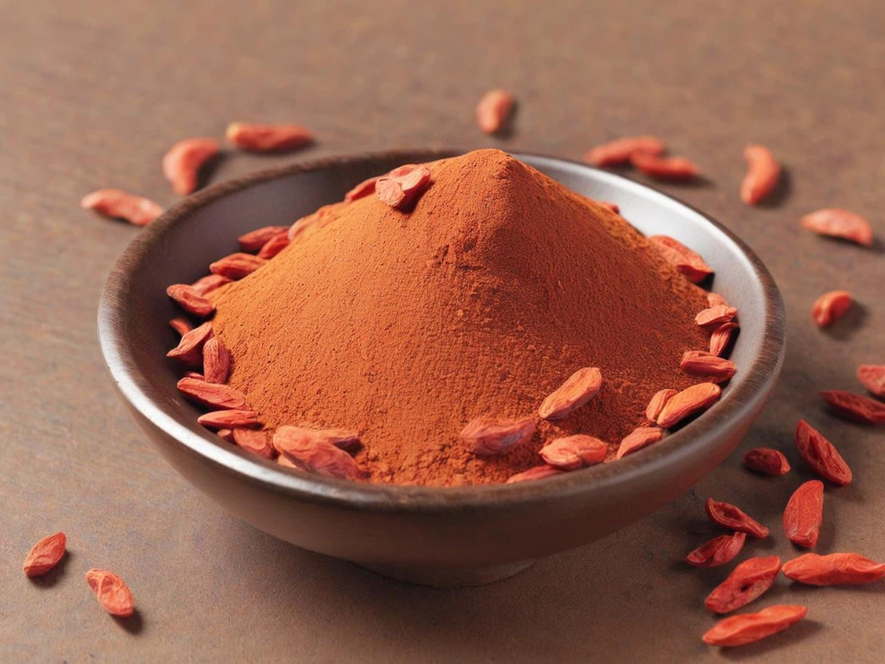
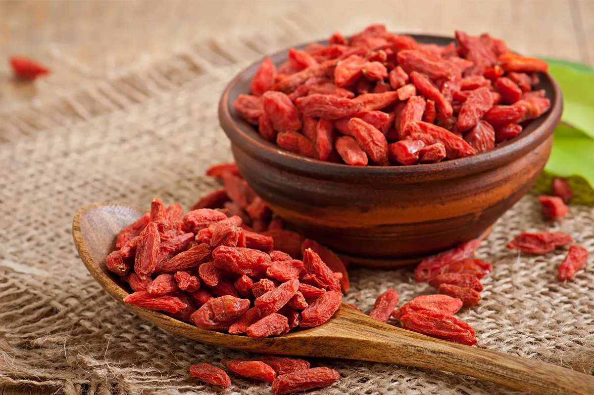

Fructus Lycii
Eredità dei Longevi: equilibrio, forza longevità

Il Goji (Lycium barbarum) è una polvere dal rosso arancio caldo e avvolgente, ricavata dall'essiccazione delle bacche di un arbusto appartenente alla famiglia delle Solanaceae. Conosciuto come "Bacca della Longevità", è uno dei rimedi più radicati nella medicina tradizionale cinese. Il suo patrimonio nutrizionale è custodito dai polisaccaridi del Lycium, composti bioattivi responsabili del suo profilo immunostimolante e del suo sapore dolce-acidulo.
La Cina è la patria indiscussa del Goji e il paese con la più antica tradizione colturale al mondo. Le piantagioni d'eccellenza si trovano nelle regioni di Ningxia e Qinghai, altopiani semi-aridi dove le escursioni termiche e i terreni minerali conferiscono alle bacche una densità nutritiva superiore a qualsiasi altra area produttiva.
Le bacche vengono colte a mano tra luglio e ottobre, poi essiccate all'ombra per preservarne i pigmenti carotenoidi. Le bacche essiccate vengono infine macinate a freddo, ottenendo una polvere omogenea dal colore arancio-rosso intenso e dall'aroma dolce ed erbaceo.



La storia del Goji si intreccia con oltre 2.000 anni di medicina cinese. Nei classici testi della farmacopea tradizionale, come il Bencao Gangmu di Li Shizhen del 1578, la bacca era già descritta come tonico degli occhi, fegato e reni. La leggenda narra di Li Qing Yuen, un erborista cinese vissuto presumibilmente fino a 256 anni, il cui segreto di longevità era attribuito al consumo quotidiano di Goji. Indipendentemente dalla sua veridicità, questa storia testimonia quanto questa bacca fosse radicata nell'immaginario della salute nella cultura cinese.
Ciò che la tradizione aveva intuito, la ricerca scientifica lo ha oggi documentato con precisione: